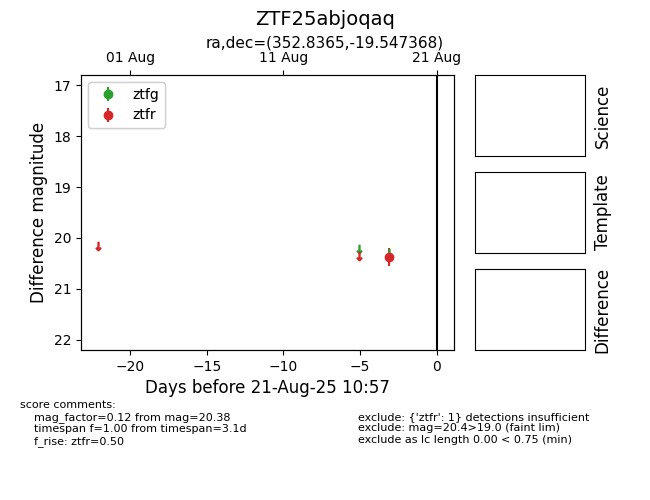

Target ZTF25abjoqaq at 2025-08-21 10:57, see:
FINK: fink-portal.org/ZTF25abjoqaq
Lasair: lasair-ztf.lsst.ac.uk/objects/ZTF25abjoqaq
ALeRCE: alerce.online/object/ZTF25abjoqaq
alt names
ZTF25abjoqaq (ztf,alerce)
coordinates:
equatorial (ra, dec) = (352.8365,-19.54737)
galactic (l, b) = (51.1105,-70.14666)
photometry
last ztfr=20.38
1 ztfr detections
